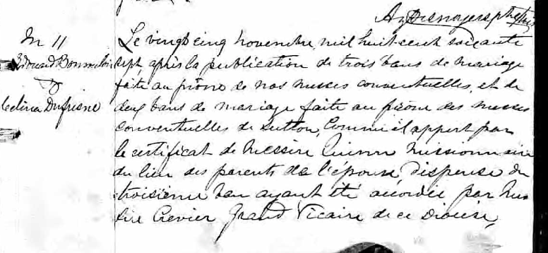
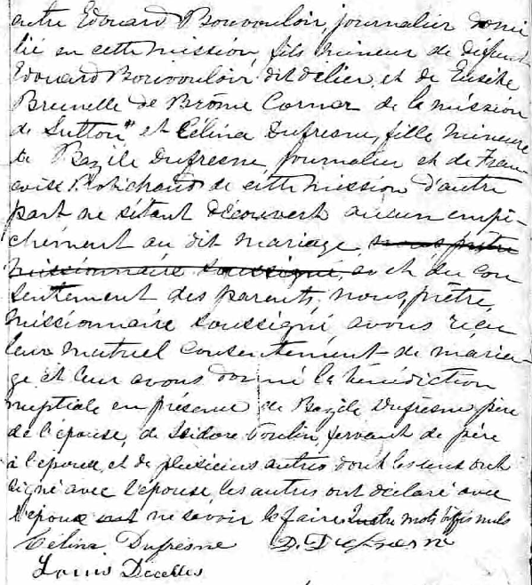

Marriage of Édouard Bonvouloir (Deslières) and Célina Dufresne, Bolton, Quebec
Quebec, Canada, Vital and Church Records (Drouin Collection); St-Étienne-de-Bolton, 1867, images 9–10 of 12


The original record, as it appears in the register or index.
What this document is
A marriage record, written when the couple married.
What it says
No. 11. November 25, 1867, after three banns at this mission and two at Sutton (the third dispensed by the Vicar General, Crevier): Édouard Bonvouloir, day laborer, living in this mission, a minor, son of the late Édouard Bonvouloir dit Delier(?) and of Elsiste(?) Brunelle, of Brome Corner in the mission of Sutton; and Célina Dufresne, a minor, daughter of Bazile Dufresne, day laborer, and of Françoise Rochichaud(?), of this mission. Married with their parents’ consent, in the presence of Bazile Dufresne, father of the bride, and Isidore Tocelin(?), standing as father to the groom. Signed Célina Dufresne, B. Dufresne(?), Louis Decelles. These are Constance’s great-grandparents (Constance → Eugenie → Julia → Édouard and Célina): Édouard and Célina were the parents of her grandmother Julia. Bonvouloir is the family’s second name (a French-Canadian “dit” name) alongside Deslières.
Place
St-Étienne-de-Bolton mission, Brome County, Quebec
How it was read
Read from the register image. Readings marked (?) are uncertain handwriting. Ancestry indexes the mother as Françoise Rotichaud.